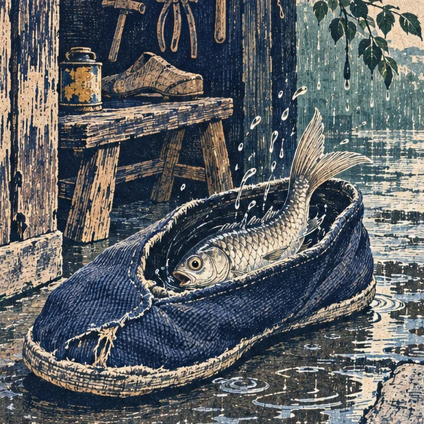
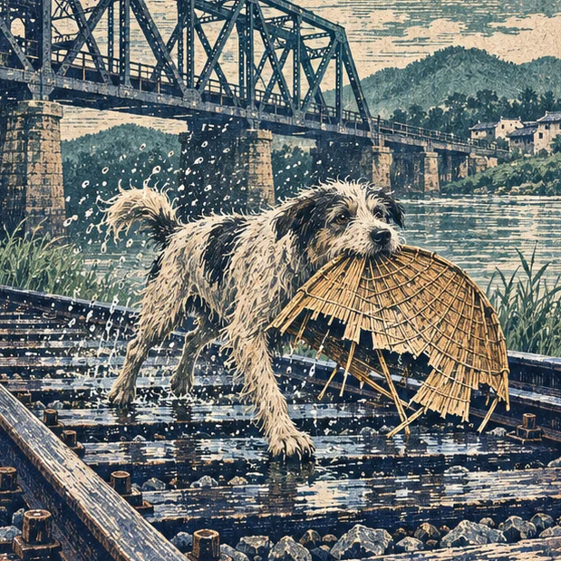
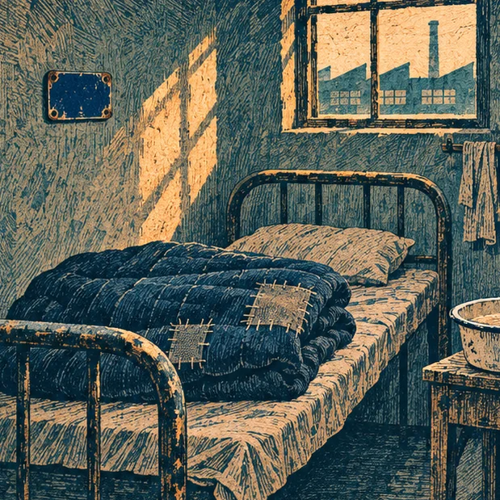
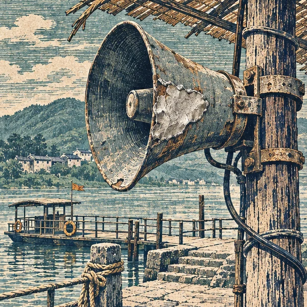
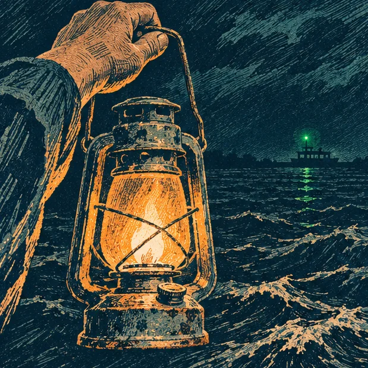
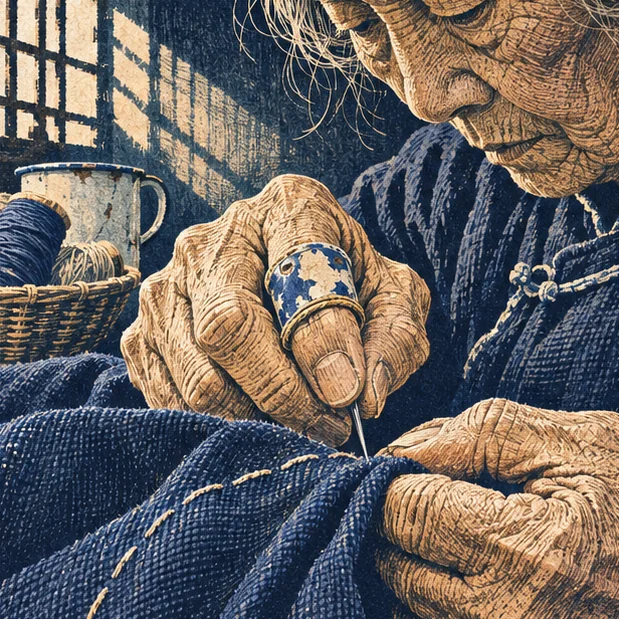
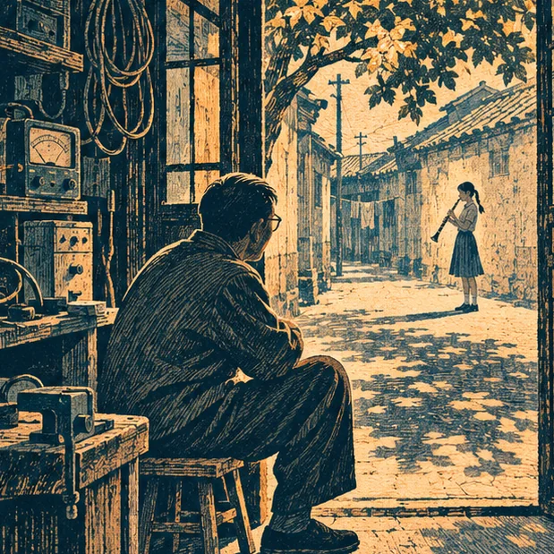

鱼
本次换带 · 沈一鸣六月1日 / 陈雾六月13日“老沈，下午有条鱼要进你的鞋。车牌尾号七三九。记得还给人家。”
沈一鸣头一回听见陈雾的声音，竟是这么一句。说完她吸了一下鼻子。隔了一会儿，口气变了，像屋里还有个睡着的人。
“还有，往后你要是跟谁说起我，记得讲清楚。那句‘我在船上’，是我放的。我叫陈雾，起雾的雾。”
录音到这里断了。桌子底下，他那锅茶叶蛋还在咕噜咕噜响。
二〇二六年六月一日，凌晨三点三十三分。沈一鸣开着小锅，是因为这个月楼上的早点铺歇业，他决定自己解决早饭。开着录音机，是因为瑞河纺织厂挑了当年撤渡的日子，六月十三，给旧物展开门。展厅里几十件东西都死透了，馆方偏想找一样能出声的。傍晚赵默给他送来一台灰皮随身听，原主是厂里的机工周德明。机背贴着一张褪色的纸，周师傅一辈子写不好那个“寄”字，宝盖头大得足够底下再站一个人。两个键，一个写“寄”，一个写“取”。机子里还卧着一盘厂渡值班带，带盒上六月一日至十三日排成一溜，末一栏以后没再填过字。
沈一鸣给它配了皮带，装上电池，冲着话筒试了句“左耳，听得见吗”。他说完放下烙铁去给蛋翻身，身后那个十来年没动过的“取”键就咔哒一下沉了下去。
他头一遍放出来的，是鞋底蹭地似的一串怪声。怪声当中噎了一下，像有人把气吐回嗓子里。沈一鸣把带子倒回开头，再放，还是那样。他把整段收进电脑，选了反向播放。一下听清了：女人先喊他老沈，叮嘱他还鱼，然后才在两句话之间吸了那口气。写着“取”的键早已弹起来了。他对着已经凉下去的话筒问了声“你怎么知道我姓沈”，耳机里那女人照旧叫他还鱼。
他给赵默发消息，问他找的什么人配音。赵默早上七点回了三个字：神经病。
这一整天沈一鸣穿凉鞋。倒也不全是存心和她作对。店里没空调，穿布鞋太热。他把那双旧布鞋踢到卷帘门旁边，照样接活。上午来的是家里办金婚的，要把当年新郎在洞房外让人逼着唱的《小芳》剪下来。中午来的是金婚那家的老头，出了双倍的钱，要他把《小芳》弄没。沈一鸣说你们商量好了再来，两边的钱都没敢收。
下午两点，巷口哗啦一声，一个白沫箱子擦着地滑进来。几十条泥鳅争先恐后地进了他家，送鱼的小伙子趴在地上拿两个手掌拢，越拢越散。一条巴掌大的鲫鱼蹦到卷帘门上，啪，落进他那只旧布鞋，尾巴还露在外头。
沈一鸣先去看车。三轮车斜倒在洼地里，后头蓝底小牌沾了泥。他伸手一抹。七三九。
“师傅！”小伙子在他背后喊，“搭把手哇，回头再定责！”
两个人忙了半天，最后在茶叶蛋锅底下又捉了四条。锅里溅进泥汤，一锅蛋只好全倒掉。那条鲫鱼在鞋里蹭掉几片鳞，给小伙子倒回盆里，还能游。地上的水流出门槛，沈一鸣站在水里，忽然想起那女人嘱咐他还鱼时的口气，好像很熟悉他舍不得东西的毛病。

他在旧采访的听写稿里搜“我在船上”。本地硬盘给出一百多个结果。他把范围缩小到“瑞河”“口述”，剩下一个。苏兰，女工，获救者。录于十一年前。制作者一栏填着沈一鸣自己的名字。
他没点开。隔壁借给他一把长刮子，他把满店的腥水往外赶。天黑前，有一个人从门外探进头来。
“修录音的沈师傅？”
“是。”
“瑞河厂展厅里那个说‘齐了’的人，你们还打算让他接着说啊？”
来人剃光了头，耳朵后面留着两绺没刮干净的白毛，手里拎一条黑塑料袋。沈一鸣认得，是周德明的儿子周小嘉。小时候大家叫他小嘉，现在他四十八了，也没人想到给他换一个名字。
“那段还在商量。”沈一鸣说。
小嘉点点头，把黑袋子放下。里面是修好随身听的工钱，用信封装着，角上透出一小块油斑。
“机子我爸的，我出。别的你们商量。”
他走得很快。沈一鸣想追出去说，展馆给了钱。那个人的背已经在巷口拐了弯。地上留着一双脚印，间隔出奇的大，像有要紧事等着他去办。
六个字
本次换带 · 沈一鸣六月2日 / 陈雾六月12日六月二日凌晨，赶在第二次换带之前，沈一鸣往“寄”里留了鱼和车牌号。他又说，我三十五，姓沈的一条街都是，你别一上来就把我叫老了。等灯亮的时候，他拿眼角瞥见机身侧面一条窄窗。刚修好时露在里面的蓝线有十三格，这会儿只剩十二。三点三十三分，一声轻响，又去一格。像裁缝铺里赊布的账，一寸一寸勾掉。
他把刚收下的第二段倒音另存一份，和昨天一样从尾往头放。背景里有人报水位，还有人问广播室的裤衩是谁的。女人劈头说：“把灯举两下，就是听见了。你放心，我妈胳膊好得很。”沈一鸣朝窗外看了一眼，巷口只亮着个包子铺的灯箱，天都没亮透。他把这句也留着。
“我这边六月十二，二〇〇三年。老沈，厂西的渡棚快泡了，余巧要留下等苏兰。你去找你那里那个苏兰。她有句话我用得上，‘阿巧，我在船上’。只要这六个字。算我求你。”
这回他听出对方很年轻，可能比他小十来岁。“二〇〇三”几个字她连起来念，中间两个零，圆得很。
那年厂区进过大水。沈一鸣十二岁，住在上街，水退了半个月家里吃的白菜还比肉贵。这些年他做瑞河的口述录音，见过渡棚那张清点表。开船前，看一块床牌，打一个红勾，牌子还归各人拿着。纸上四十七个红勾。他当时在提要上写：少了一个没有牌的女工，叫余巧，至今下落不明。十一年前，做给老厂的纪念短片里有句出名的录音，船上的周师傅说，“齐了”。后来短片在网上传开，一提瑞河的水，人家都学那一声。声音很轻，背后接一段轮机响，片子就黑了。
沈一鸣打开苏兰的旧录音。她原先跟余巧睡一张铺，一人上白班，一人上夜班，这在厂里叫对班。开头她还挺合作，给麦克风倒茶，请麦克风吃花生米。问到那天，她说她在船上，岸上的事要去问岸上的人。他从头找到尾，没有连在一起的那六个字。
苏兰在旧职工区开间改衣铺，铺面小得进了门还得横着走。沈一鸣到的时候，她正把一条四十块钱买的裙子改窄，和客人说好收十二。客人说，便宜点啊兰姨。她说，妹妹，你裙子四十，不等于我的一天也四十。客人痛快地给了。
“坐。声音又坏啦？”她问。
沈一鸣说想让她喊个人，就叫阿巧，说自己在船上。她把大剪刀搁下，推了推鼻梁上的眼镜。
“我跟阿巧说过多少话，你偏要一句我没说过的。”
“如果当年有机会呢？”
“你们做片子的真奇怪。活人坐在跟前，一张嘴就说当年。”她端起小茶杯，“她夜班回来，先摸我枕头底下。那儿有半块桃酥，纸包好，免得进蚂蚁。她先掰条边给我留着，掰着掰着就剩一个角。这事你要么？”
沈一鸣看着她。她也回看他，一只手伸过来，把他衣襟上夹的话筒翻过去，看红灯亮着没有。他来的路上已经关了。
“我想给一个特别想听见她的人用。”
“想听谁？”
“你。”
“那叫那个人自己来。”
临走她给他的布鞋缝了两针。鱼尾巴把右边的线口挣开了，他没察觉。她不要钱，拿小锤贴着鞋楦敲两下，叫他试。鞋紧了一点，右脚丫有了着落。
回店以后他重新打开十一年前的访问。进度条走到四十二分钟，旧录音里是苏兰笑着跟走廊里的人说：“都听错啦，我说的是阿巧。阿巧！喊一声，那头车间也听得见。”往后七分钟，她又说了一个完整的“我在船上”。两个地方的底噪不一样，一个开着风扇，一个关了，好在都是他自己录的，连拿话筒的角度都没换。
他把两截拖到一处，听了一遍。两个字和四个字，中间只要空出一口气，就好像真有人站在舷边，对着底下伸出了手。
他另开了一条，自己叫余巧上船。刚喊一声就愣住了：余巧凭什么肯跟一个连面都没见过的人走？他又去看那张跟了自己十一年的清点表，手指头停在“下落不明”四个字上。
凌晨三点，他站起来，搁在桌边的布鞋让他碰落了一只。他没有去捡。
两排收条
本次换带 · 沈一鸣六月3日 / 陈雾六月11日三号凌晨，沈一鸣给那六个字接了个尾巴，用自己的嗓子说“这是剪的”。听起来，那只向岸上伸出去的手才伸到一半，就让他自己拉回来了。他想起头晚小嘉站在门口的样子。假如当年那条船肯再停一停，他何至于十一年来一见姓周的就想绕路。如今有条船还没开。三点三十二分，他把那句说明抹掉，却还是想知道这段声音到了岸上会怎么样。他在六个字后面给陈雾单留了一句：“喇叭只往外喊。渡棚里的人听见了，你怎么知道？”分针又走了一格。
新的一段里，陈雾说：“我在渡棚门口等了她半天。她给一个捡棉纱的孩子擦屁股，让我把住门，省得他害臊。水都这样深了，人还得害臊。你说怪不怪。”
沈一鸣等着她说谢谢，等到录音尽头也没等着。他再放一遍，留意到开头报的是六月十一号的早班。昨夜那把嗓子还在十二号托他帮忙。再听前天的底声，女人背后有人叫“十三号的水位填这儿”。他关掉声音，在桌上腾了块地方。
赵默九点来收送展的样机，沈一鸣拿了十三张修理收条，写上六月的头十三天，一张挨一张在桌上排好。又找十三张空的，在下头从十三号往一号倒排。赵默刚送完孩子上学，没吃早饭，剥他锅里最后一个茶叶蛋，一口少了大半。
“她有病啊，日子往后过？”
“人家起床、刷牙、吃蛋，都跟咱们一样。来，你替她。你的六月一号在右下角，我的在左上角。你往你的二号走，我也往我的二号走。”
他们各自沿一排收条挪指头，走到两张七号，两根指头尖碰了一碰。
“然后呢？”
沈一鸣的手继续向右，走到上排尽头。他用指甲划了划那个十三，又划了划它底下的一。“到这儿，你今天才遇着我。我认得你十三天了。”
“那你明天跟我说什么？”
“明天我就遇不着你了。”
赵默停下嚼蛋。他还欠儿子班主任一笔校服钱，要打给另一个姓赵的，又怕转错了，半天分不出神把手机打开。他低头看着那两排收条。沈一鸣以为他要问这机器怎么来的。他问：“那这姑娘，到你最后一天，得有多烦你啊？一个陌生男的上来就这么自来熟。”
赵默把两张七号上的蛋壳捡干净。沈一鸣却把手指往回挪了一格。他刚问陈雾怎么知道有人听见，她今天没提灯，昨天倒已经说过了，要把灯举两下。他开电脑找到昨天的录音，旁边是自己今早才录的那句问话。两份文件差了整整一天。他把耳机递给赵默，按自己收到的次序放。头一遍，赵默还在四下找谁举了灯。等那句问话放完，他自己伸手，把昨儿那段又点了一遍。
赵默还是想试一回，按下“寄”，问她那边吃早饭没有。小轮子转满一分钟便停了，白天按多少次“取”也空着。赵默把这句洗掉了。
“就算我把它留到明早呢？”
沈一鸣指指桌上十一号旁边的十号：“那位连给孩子看门的事都还没经过。你倒能告诉她，她明儿会碰上个光屁股的小子。”
赵默乐了。沈一鸣拿笔在电脑的两个文件夹上方贴好字：左边存机器收到的倒音，右边放翻正了能听的副本。以后每天两边各留一份。
那天中午，赵默带他去看试装的展厅。天花板上还漏雨，承包灯光的师傅坐在梯子上喝酸奶。进门是旧宿舍里运来的铁床，架子漆了特别喜庆的绿，床脚缺个帽，底下垫着一本往年的黄历。沿墙排列四十七个搪瓷小牌。赵默管展陈，给每块牌子做了一个暖黄小灯，手掌靠近就亮。孩子肯定喜欢。
最里面一间挂着一排耳机。沈一鸣拿起一副，自己的旧作劈头就是那两个字，齐了。轮机呜呜两声，隔壁别的耳机也陆续说起齐了。小嘉在门口蹲着，正替电工扶那根梯子。
沈一鸣赶紧拔了电。梯子上的人差点栽下来，骂他怎么把工作灯也关了。
“别拔，省得他还得下来。”小嘉说。
“我能不能先给你弄一份原样的，从别人问话那里放起？”沈一鸣看看小嘉，又看看赵默。赵默的校服钱刚要转出去，手指头停在屏上。
“我爸说过的？”小嘉问。
“我回去找。”他还没听见对面有老周，也没敢保证厂里那盘底带一定找得着。
小嘉重新扶住梯子。等电工把灯拧好，才说：“我爸鼻音重，话又慢。你找着了，别嫌他费时间。”
铁桥的影子
本次换带 · 沈一鸣六月4日 / 陈雾六月10日四号凌晨，沈一鸣从旧采访里各取了一小截，把苏兰两句话各自的上下文寄过去，连同电风扇关掉时的一声“嗒”。他说：“那句叫阿巧上船的话，是我接的。你先听听她原来在说什么。”说完他看了一眼寄件日期，才想到陈雾会先听这份说明，隔一天才拿到他昨晚剪的那句话。
翻正今天的来带，开头是重东西在地上拖，她说话拱一下停一下。最后她把那东西放平，才松了一口气：“我妈叫余巧，灵巧的巧。苏兰是她的对班。这两个老太太加在一块凑不出一架梯子高，可我们西街谁要生孩子、谁家老人要抬去医院，都来找她俩。我们这里苏兰到东堤帮忙去了，电话线倒了。我妈说好了在渡棚等她。”
老太太。那会儿余巧才四十一岁。沈一鸣听到这里才发觉，自己把她想成了一张焦黄的照片，连她到四十一岁还能一口气跑上四楼都想象不出来。
后面有一声脆响，陈雾说：“坏了。我妈老说我手欠。西桥的钟又停了。先顾不上替她修了。你家那边也听得见这钟吧？”
他穿着有两针新线的布鞋去了永湖公园。公园里有个豁口，过去从这儿进西厂，里头曾经有一座铁桥。报纸上印着它一九九八年拆除时的照片，钟和桥一块儿拆了，那时离陈雾的二〇〇三还早五年。偏偏是她口齿不清地含在嘴里的一声“坏了”，让他想去看一看。
现在的湖是后来开挖的，堤上聚着卖青提和吹泡泡水的小摊。往下走，草里还剩半个青石桥座，水把底下啃出一道半尺来宽的白缝。沈一鸣在岸上听了一会儿，没听见钟，只有游船上一个恶狠狠的年轻父亲在喊，妈妈有糖尿病，再敢拿可乐喂妈妈你试试。
快要走时，他忽然看见石缝里有一条狗。确切地说，是一条狗的后半截，极小，隔着一汪茶色的水，像从门上猫眼看楼道里的人。狗尾巴湿淋淋的，转了一圈，水珠从四面扑回去，齐齐粘到毛尖上。它往后退，退上几级他们这里早就没有的枕木。这时狗的前半截才露出来，嘴里叼一只破草帽。
沈一鸣蹲得太急，膝盖骨磕上了桥座。影子还在。铁桥的格子落在枕木上，一格黑一格白。他把手指伸到白缝跟前，手浸在自己这一边冰凉的湖水里，碰不着狗，什么也没透过去。这几秒他看得很清楚。每退一步，木头上一个湿爪印就揭起来，收回它脚掌底下。退到石级尽头，狗屁股先沉进水里，水合到它的脖子。沈一鸣把这几秒钟在脑子里顺过来：那边有条狗，刚衔着谁的草帽爬上岸，浑身湿透，站定了甩一甩。
有件东西在狗身后浮了半圈。沈一鸣当它是只倒扣的淘米盆，直到它从水里升起来，窄的那一头重新卡进木柱上的抱箍，他才认出那是一只铁皮喇叭。喇叭口补过巴掌大的一道锡疤。顺着他自己的眼睛看，它修好了；顺着那条狗过日子的方向看，水把它从柱子上冲走了。他从衬衫口袋里摸出送货签收单，在背面画下那只歪嘴巴和它离第一级石阶的位置。

过了一会儿，淘米盆又在原处浮了半圈，那条狗嘴里的草帽又缺了同一个角。沈一鸣蹲到卖青提的人收摊，帽子一次也没掉，喇叭一次也没能留在柱子上。背后的公园大钟敲了六下，水里连钟声也没有。最后一遍他用手机把这段倒着走的影子录了下来。
回去他给赵默看。大半画面叫水光打白了，只在半秒钟里辨得出几截枕木。赵默捧着手机看了半天，问：“你跟它招手，它看得见你吗？”
“我挡住半个桥座，它还管自己甩水。连甩了好几回，同一滴水我都认得了。”
“可惜。我想知道桥那头的房还在不在。我外公家楼下有个卖熟羊脸的，他给别人割脸，给我留舌头。”
沈一鸣一愣。他只顾着想那边有什么不一样，没想到有人还惦记一样的东西。
铺位
本次换带 · 沈一鸣六月5日 / 陈雾六月9日六月五日，陈雾寄来四十多秒的河声。先是水拍木排，跟着有个男人把痰咳到一半，想起来有人在录，又生生憋回去。接着响了两下铃。她补了一句：“周师傅答应守最后一班船，我让他把铃借我试了一下。听你说过那么多回，我头一次知道机工也是要吐痰的。”
沈一鸣认得这个咳法。他从前常去周家找材料，老头嗓子太紧，一阵咳上来得停工十来分钟，小嘉会给他切半只梨。他反倒不大记得老人家平时说话是什么样。一提这个人，心里先有齐了那两字的声音。
收带以前，他录好寄给陈雾的是瑞河的旧案。他说他这边余巧没回来，清点表用的是床牌，那边留神，一张牌子说不准对着两个人。要按人的脸认。他没有告诉她，二〇〇三年六月十三日，周德明的船在三点五十开的。那行铅字在他桌上放了整整两天，到了最后关头，他怕这一说，人家就真以为船非得那时开。他当时以为，这叫给人留条路。

傍晚，他在改衣铺门口碰见苏兰给一个男孩量裤长。男孩不耐烦，问几时量好，他要去打球。苏兰把绷直的小腿肚拍了一下：“跑一趟就长高半寸？你先坐住吧。”她让沈一鸣替客人压一下装裤脚的白纸袋，转身去后柜取东西。递给他的是个布坨，摊开便是一块蓝搪瓷牌，47，边上缺个小口子。
“馆里那块是后配的？”他问。
“馆里那四十七块都后配的，数字描得忒好了。以前领铺盖，朱会计用半干的一枝漆笔写到末尾，四十以下多少有点秃。我跟阿巧这块，乍看是个山字。”
苏兰让他把牌子翻过来。背面有两道密密的点子，一道歪，一道直。她们缝厚裤脚拿它当顶针，一人爱把牌子搁在桌边，另一人拿它垫手心。几年下来，桌边的那道针痕就齐整一些。两个人倒班住一张床，厂里只肯发一套铺盖。夏天还好，冬天一个刚脱下来的热袜子另一个立刻套上去。余巧有次上中班，穿走两只右脚袜。旧袜子穿久了分左右，一只大脚趾头把布拱出个尖。下班她跟苏兰说，我今天像借了一双脚。
“你认不认识一个叫陈雾的？她说她妈叫余巧。”
“阿巧跟姓陈的，开春就散伙了。哪来的孩子？”她看了他一会儿，“你别拿那副神情看我。是不是我那声‘阿巧’让你做出来了？”
他低头抠那个已经歪了的山字。苏兰倒了半杯凉白开，搁在缝纫机踏板下。穿裤子的男孩弯腰就把它喝了。她给了他后脑勺一巴掌，说那是给熨斗喝的，没长眼？男孩光脚套上裤子，嘻嘻哈哈跑掉。
等外头没人，她又问了一次。她不给他换题目的机会。他告诉她陈雾在哪儿值夜班，也承认是自己从旧访问里接了那六个字。说到这儿，他递过手机。她拿过他的手机，把那段话放了三遍。
“我老成这样了。”她说。
她把手机掉过来，亲手删掉播放器里那份给她听的剪样，看见列表里还有别的文件，又把手收回来。“光删这个有啥用，你老实讲，寄出去没有？”沈一鸣点了头。她这才把椅子往前挪了一格。
“我在船上的时候一直在呕。四十七个人里，大概有一半叫我呕过鞋子。德明给我块抹机器的布，让我把嘴擦擦。你叫我喊阿巧喊得这么稳，跟站主席台似的。她信才怪呢。”
“我要是能让她听见你真正想说的——”
苏兰把手机递还给他：“先把你怎么剪的跟她女儿讲清楚。还有，你要再录我，让我自己按停。”她把桌角的牌子往自己这边挪了挪，“这个也别拿去配暖黄灯，灯老照它，跟白内障似的。”
沈一鸣原先伸出去要拿牌子的手绕了个弯，抓起搁在旁边的手机。门快合上了，里头响了一下，是苏兰把搪瓷牌锁进了缝纫机底下的小抽屉。
耳朵
本次换带 · 沈一鸣六月6日 / 陈雾六月8日那晚沈一鸣本来想跟陈雾吵一架。他在一张修理收条背面写了个开头：你要拿人家的声音去哄余巧，怎么不早点跟我讲？搁笔才想起，等三点三十三分一到，接这封信的是六月八日的陈雾。她手上连一个“阿巧”都还没有，更没开口要过那六个字。他倒可以把这场架吵下去，只是得先告诉对方，过几天她会干出什么好事。
他把那个“你”字划掉，另起一行，换成“我”。六月六日的交接以前，沈一鸣给陈雾录了三次道歉。第一次太像给客户说话，第二次把事情全赖到涨水上。最后他交代：“苏兰当面没肯。我转身回店，把她从前的两句话接在了一块儿。她让我亲口跟你讲。”他承认，剪一段假话，其实比修一段真话省工得多，他从前就知道。
那天的来带翻正以后，头一句偏偏是：“你也怕听自己的声音？”
隔一口气，又添一句：“我今天去试播，听见自己喊我妈，像个骂街的。”
沈一鸣在店里笑出来。寄出去以后才能听她那头的东西，这次竟像她真听见了他，顺嘴回了一句。明知道碰巧，还是高兴。
他把苏兰那把踩累了会吱呀响的缝纫椅搬回店里，垫了个旧皮圈。下午给她送去，一老一少坐在店门口喝玻璃瓶汽水。苏兰年轻时做挑布工，人家拿着一匹布来，她不用看码单，用两根指头掐一掐，就知道里面掺没掺便宜纱。老了以后手还挺灵，耳朵却先背了，人坐她右边，说什么她都以为是问价。沈一鸣挪到左边去。
她问船还在不在。沈一鸣说在，那边的周师傅还在咳。苏兰听着有些好笑：“那时候他四十七八，一口好牙，咳归咳，鸭脖子能啃得让狗都不乐意。”
“您为什么二十三年都把那块牌子留在自己手里？”
“阿巧让我拿着的。下雨前她要去渡棚取东西，叫我给她占床。进厂以来头一次夜里不用开工，我们两个商量好，要一起上床躺躺。以前就没同时躺过，晓得吧？铺太小，我们想看看挤不挤得下。”
她在空中比了个宽窄。七十公分，两个二十几岁的大姑娘并排够呛，两个四十几岁的那还了得。她们心里早就有数，只是还想试一试。沈一鸣想叫她把手势再做一遍，他好拍下来，手伸到口袋里，又缩回去。
“他们把床架漆成了绿的，边上给小孩子做了个游戏。”他说，“手往牌子前面一伸，灯就亮，你就算被点到了。”
“床也抬去了？”
“抬去了。”
苏兰撇撇嘴。“没虱子没蚊帐，还漆那么绿。没过过苦日子的人真肯糟践绿漆。”她喝完汽水，把瓶子放到他脚下，“你那段带子还能拿回来不？”
“拿不回了。”
“那就再给她一段。哪个肯冒我的名，我管不住。我的话，总还可以让我自己说一次吧。”她把喝空的瓶子翻过来，一滴汽水顺着瓶口落在地上。“你把按停的地方指给我。”
那天夜里，沈一鸣给父亲的遗物箱腾出个位置，把周德明的机器郑重摆进去。放好又觉出不吉利，还是抱了出来。锅里的第三批茶叶蛋煮得起了蜂窝，他把一个吃坏的蛋扔掉，忽然想，如果陈雾每天也是这样等，一顿饭含在嘴里咽不下去，是不是自己该给人家寄点好玩的？门口有个学单簧管的女孩，几个月了，每到同一个地方就破音。也许可以寄这一段。可他头一次生出想让她听听一段没用的声音的念头，两个人的日子已经差不多走到交叉口了。
快睡时，赵默发来展厅结算单，一共一万六，先付的八千里有小半是灯和线路的钱。他打字：明天馆里要解释你说的新录音是什么。沈一鸣回：再给我两天。
赵默发过来一个字：好。过了十分钟又发来一张照片。他把十三张收条照原样排在家里的饭桌上。他儿子蹲在一边，在两张七号上各画了一只耳朵，朝着相反的方向。
对班
本次换带 · 沈一鸣六月7日 / 陈雾六月7日没等沈一鸣带机器上门，六月七日凌晨一点，苏兰先在修理铺外把他叫起来了。她年轻时做夜班，这些年睡到一点就得醒一回，拿笤帚把楼梯扫到三楼，总算把眼睛扫困了，才好躺下。她带来半斤桃酥，头上还套着顶压头发的小花帽。
“声音清楚吗？”
“很清楚。”
“它晓得你讲完没有吗？”
“你想收声，就按这块方的。要是没按，一分钟也会停。寄走还早。”他把自己的椅子往玻璃外面挪了挪。
“富余。她以前吃桃酥不用两个半钟头。”
苏兰坐在录音间里，对着烫了个小洞的防喷罩，左手拇指轻轻刮右手拇指上的老茧。沈一鸣把话筒递过去，让她自己拿着。她叫了声小陈，停下来看看门，像查对屋里还有没有旁人。
“你妈妈睡着了，上嘴唇会跑到下嘴唇下面去，有点像生气。是这么一个人吧？我就没见她发过几回火，睡着了倒很凶。你替我告诉她，渡棚很冷，待久了她腿要抽筋。我有一条腿就是那么抽坏的。还有，我在这边。你要问我在哪儿，我今儿凌晨在一个姓沈的小崽子家里，他拿煮蛋的锅烧水给我喝，有点咸。你放给她听，她自己知道该往哪儿去。”
苏兰看看还在转的小轮子，掰开一块桃酥，塑料袋沙沙地响。沈一鸣隔着玻璃举起五根手指，提醒她还剩五秒。她朝他摆摆手，自己把最后几个字说完。
“死相。边都给我留着。”
她伸指一按，方键干干脆脆地响了一下。沈一鸣没问她说的是谁。
在另一个瑞河，六月七日的凌晨，陈雾在广播站长条桌底下翻找一只丢了的凉鞋。她弟弟小棉花趴在长凳上，横着占了两个人的位置，身上盖一面退下来的红旗。外头雨水顺着三根电线往下淌，这三根一根到摇铃的渡船，一根到西厂喇叭，还有一根出站就跟别的线拧成一束，线上缠着小棉花的红头绳。电工嫌碍事要摘，陈雾拿手挡了一下。
余巧拎着两只保温饭盒来了。她一把将凉鞋从陈雾屁股下面扯出来。
“我就说迟早给你坐扁了。给，青椒土豆丝。你弟吃不吃麻酱？”
“他睡着呢，你别把他喊醒。”
“我又没叫你当场问他。”
余巧在广播室的木头椅子坐下，屁股只搁了一条边。她看见桌上那张日历，七号这页红笔画了一个圈，两边都是撕下来的纸，反着粘好。她问姑娘，平白糟蹋日历干什么。
“给我一个朋友算他还有几天能认得我。”
“病了？”
“昨儿他寄个小孩吹破音，我跟棉花听一遍笑一遍。再过几天，我大概还得跟人家讲，我叫陈雾。”
她从六月一日就跟着一把中年男人似的嗓子走。起先他连她开钟盖时会掉出几根雪糕棍都知道；昨天，他只寄来一个小姑娘吹破了音的调子，连句解释也懒得加。声音来得越多，她越摸不准他，倒是他的称呼一天比一天客套。上回他还肯叫她的时候，已经连名带姓地叫陈雾了。最初他叫过她小陈，她翻着找，怎么也找不回第一次听这个称呼时的自在。
她把摸得发亮的台式录音机移过来。船上原来用小机子录，台里用大机子录，各记一个钟点，事后才知道哪声开船铃该接哪句喊话。老周爱改机器，拿报废钟的石英配过对点，还给台机加了个“倒听”档，原先专哄小孩子来听自己把名字倒着念。这半个月陈雾天天用它。每回先让那段生音落到带上，再拨过去听。

“妈，你愿意给苏兰姨带个话吗？给等得比我们久的那个姨。”
她原先是要母亲保证一下，答应自己碰上大水马上走。话到嘴边没说出口。余巧用筷子夹着土豆丝，一根一根摆上饭盒盖晾着，凉透了，小棉花睡起来就能吃。她对着机器说：“兰啊，你保重。可以让小雾给你跑腿，这丫头腿长。她要替我答应什么，你可得回来问问我。”
她顿了顿，又笑道：“找我不难。照老规矩，床上没你就是有我。”
余巧还想提醒女儿别忘了吃饭，陈雾已经把“寄”键抬了起来。她妈在哪一声上停口，她就给留在哪一声上。
三点三十三分，沈一鸣的随身听换了一格。苏兰坐了一夜，耳背的那一边朝着喇叭，头几个倒着的怪音竟没听见。沈把新带收进电脑，翻正了，从她左手边递过去一只耳机。听到“可以让小雾给你跑腿”，她正另掰一块桃酥给沈一鸣，肩膀一耸，碎芝麻落了他一手。
在陈雾的广播室里，钟面也走过了三点三十三。余巧听见一片窸窣，凑到机器前问：“有耗子？”陈雾等收带轮停稳，把旋钮拨到“倒听”。原先生涩的一串声响里冒出一个她们都认得的脾气，先笑话人睡着了像在生气，末了才是塑料袋响。余巧伸手把饭盒往旁边让了让，听到老姐妹嫌茶水咸，忍不住说：“她到人家屋里还挑三拣四。”这句只有她女儿听见。
有那么一会儿，两个瑞河都安静了些。苏兰在屋里找来找去，找不到个碟子，好把要留的那一半放下。陈雾从饭盒盖上偷吃了一根凉土豆丝。隔壁小棉花翻了个身，睡梦里拿嘴巴吱了一声，学的是昨天带子里那个吹破音的小姑娘。苏兰把余巧那句“床上没你就是有我”又放了一回。明晚沈一鸣还能寄信，收信的姑娘却连这顿饭还没吃上。
天亮，赵默开车来接苏兰回家。她把那袋桃酥搁在副驾上，自己坐后排。开出去十来米，又叫停车。她摇下车窗问沈一鸣：“你给我把刚才的声音刻一张碟行不？蓝光那个我不会用，要以前能放歌的。”
沈一鸣站在路沿上说好。他差点说出“想听明天我还能给您问”。这次总算在开口以前把那句话拦住了。
剩下的半张床
本次换带 · 沈一鸣六月8日 / 陈雾六月6日六月八日三点三十三分，他寄的是那个学单簧管的小女孩。前一天，苏兰的车刚开走，女孩就在墙外吹坏了那个高音，走廊上响起她妈一声长叹，又有两个大人同时没忍住笑了。沈一鸣过去问能不能录给一个值夜班的朋友听。女孩说你等会，我吹个好的。他等到傍晚，她又到屋外敲他门：“算了，我妈说你朋友夜里挺苦的，你把早上那个给她吧。”
六月六日的陈雾在来带里问：“你说欠了周德明一回人情。搭他的船忘了给钱，也叫欠人情。你欠的究竟是什么？周师傅可经不起你这样盼，他昨天划船蹭掉人家晒的一排酱鹅，让人追到我们家，饭都吃不成。你怎么知道台里第三根线还有用？我跟棉花跑得腿都细了，真叫我们试着了。”
清早垃圾车在窗外放着《兰花草》。沈一鸣剩一只耳朵听它，另一只耳朵里的“人情”两个字叫他面皮发热。他翻了翻自己的寄件，才发现自己压根儿还没向陈雾提过那段旧片。余巧给苏兰的带子就在桌边，可今天来信的这个姑娘连那一晚也还没过。
他什么时候，会跟她把那三秒钟的事说成欠人情？
小嘉的信封还在抽屉里。里面放着四百块和一张背面朝外折着的旧船票，老头用铅笔在背面记过一个茶缸的价钱，三块六。票正面被一种红色的黏东西糊住了，沈一鸣用湿棉签一点点蘸，擦出两只歪耳朵，原来是小嘉闺女小时候在爷爷票上贴的米老鼠。这家人也真奇怪，什么都舍不得扔。
他拿着票去周家。小嘉在楼下剐毛豆，一盆剐得四分之三都是壳，面前支着个小屏幕在放球。他对孩子喊了好几声姗姗，回头对沈一鸣说我又忘了，今天周一，她还在上班。他的大球衣套在背上，人瘦得布料起几道波浪。沈一鸣从对面搬个矮凳，坐下来帮他剐。
“你爸生前看过那个片子？”他问。
“当然。还说人家给他用的那段轮船声音是柴油的。他们那条渡船，柴油机早拆去抽水了。靠岸上的电动绞盘牵着过河，缆轮上了劲就吱一声，起步没有那阵突突。”
沈一鸣手指一滑，把一颗毛豆挤飞到了楼梯底下。
“他就说了这个？”
“你还想听什么？”
他有些意外，心里演练过那么多回的上门，老头居然只挑了个配音的毛病。小嘉用手压着电视上一块碎得很厉害的角，松一点，画面就全是缺了腿的人，重新使劲便又跑了起来。
“我爸那阵出门买包豆腐干，卖豆腐的人会学他，问，齐了啊？老头耳朵不好，你们还当他没听见。我们家里人不在他面前讲。后来干脆没人提起过那船，别的事儿倒常讲。”
沈一鸣用一只手帮他按住屏幕。小嘉空出双手，给他装了半袋豆子。
“你那份新录音，没准还是会传到卖豆腐的那儿。你掂量掂量。我倒想听听他吐痰，老头活着的时候我烦死他吐痰。”
晚饭沈一鸣自己剐剩下半袋，一粒一粒落进碗里。他想起苏兰说还想试试两个人躺不躺得下，忽然很难受。有人活了六十多岁，夜里始终没找着一个机会往边上挪半个身子。他摸出手机，很想跟陈雾说这个，又想起明天那位连昨天是谁都对不上。他给自己炒了个毛豆鸡蛋，一盘炒得极坏，蛋成了豆大的碎块，豆子还是生的。
空船
本次换带 · 沈一鸣六月9日 / 陈雾六月5日六月九日，沈一鸣给对岸说明了自己和周师傅的关系。这回坦白得很仔细，他是那部短片的录音剪辑，欠过周家一回人情。他还说要是那头船上有呛嗓子的东西，你别叫老周忍，咳出来，有人想听。说到“人情”，他自己顿了一下。昨天陈雾为这两个字跟他急，今天轮到他讲那部短片，头一句果真还是想往轻了说。他补了句：“片子里你听见那声开船，是我给添的。”说完才松开手。
那天收到的带子上是陈雾的六月五日。风打话筒打得像一匹布叫人撕开。
“你老说我们这边哪天哪天发水，你说我们知道了不能早点接人吗？我去问了。我们把宿舍楼提前空出来了，棉包也抬到坡上了。渡棚平时没人住，就是收船的几个回回舍不得走，他们要等最后一班。苏兰姨带人到东堤去给人家搬家，她是自己去的。你们那头发过的水，别一盆一盆全倒给我。还有，周师傅那句话，我替你带到，他听了到底什么意思，我们可没答应让你拿给一大屋子人听。”
录音里有一阵清亮的叮咣。陈雾大约撞到了铃，骂了句哎哟我的祖宗。这句话两个城里口音完全相同。
他去展厅，赵默正在跟苏兰挪铁床。是苏兰自己来的。她把漆成翠绿色的床架拧斜了，叫赵默翻到床板背面，杉木板上有几笔小账，一包红糖，七毛，胶鞋，一块一，印子浅得像游丝，边上还有四个用铅笔连起来的字。
“雾散开船。”赵默念。
“不是。‘雾，散开船’这算什么话？”苏兰说，“左边那字是露，顶上掉了俩点。露，散开，船。这是扫盲班抄的生字。阿巧没文化，先认得一堆水字边的字，别的认得就慢些。”
沈一鸣细看，果然是三个词，间距不大一样。陈雾名字里有个雾，很容易在什么上头都看见它。赵默不好意思，把灯往旁边一偏，给他看自己事先做的标牌。“当晚四十七位女工安全撤离。床牌是全体工人相濡以沫的见证。”
“上面有木工，有卖豆浆的，还有两个造漆桶的临时工，怎么到你们这儿，都成女工了？”苏兰毫不客气。
“我改。”赵默说。
“谁说是四十七个人？”她又问。
沈一鸣先愣了一下：“清点表勾了四十七个。另一个余巧，你们两个人共用一块牌，不是刚好少一个？”
“床牌只有住厂的才有，再晚一班，还有回来看屋子的，家属院照看小娃儿的，谁给他们发牌？只知少了阿巧，就敢说只少阿巧一个？”苏兰手里一块擦灰的布，轻轻擦过扫盲班的生字，“我只敢告诉你，我等的人没回来。你一张嘴，多出来的人怎么办？”
赵默拿着那块牌在那儿站了一会儿，然后抱去木工房，从钱箱里取了改字的钱。沈一鸣跟上去说，我付吧。赵默摇头：“这块是我写的。现在我晓得我写错了。”
展厅空下来，旧船舷外面装了一个小扬声器，正循环放岸边的环境音。响过第一次警铃，一条假船从右往左开出去，一分钟以后再回来，永远来得及，永远没落下谁。沈一鸣在小嘉扶过的铝梯下面坐下来，给赵默讲起当年他怎样替这个城市造了一条船。
他二十四岁时，有人给他四十个小时的现场素材，只要剪出一分半。老周报数，那句齐了前面有人问床牌，后面有个年轻人的喊声，淹在轮子的尖声里。导演看了说，谁听得懂什么是床牌？给点画面感。沈一鸣留了齐了，配上后来另找的柴油船起步声。原带复制完，他交回了厂里。厂里档案室搬过两回，后来退了库找不到了。网上能找见最干净的，只剩他剪的这一版。那时候他挺得意，快手快脚，还懂得给一分半钟找个叫人记住的结尾。
“我当时听得见有人在问床牌。”他说，“我知道那个动静跟开船离开不是一回事。”
“你在我们这个展上也打算这么干？”
“我有办法弄到他自己说话。我听过他咳嗽。他人就在那头。”
“他哪边的自己？”赵默问。
沈一鸣在底下坐了很久。太阳从高处一排窗户挪走，灯自动亮起来，四十七块搪瓷牌把微弱的黄光投到他身上。他记得在旧片子底下，好多人留言说他们都听哭了。十一年来，他头一回气恼这件事。
照纸念
本次换带 · 沈一鸣六月10日 / 陈雾六月4日在陈雾这边，那张纸是前一天从沈一鸣的带子里听写下来的。二〇〇三年六月四日，凌晨两点，周德明赶早班，在船舱里刮胡子的时候，陈雾来找他，说有个二十几年以后的人想知道，那年大水，开船的时候他还在干什么。
“哪年？”
“今年。”
“今年水还没到我脚后跟呢，小陈同志。你不如让我报一下刚才买豆腐花完五毛还剩下几毛。”
他让她进来，另一个学徒在角落剥粉笔皮，拿铅丝圈住那一截写字用的粉笔头，工工整整抄今日的航次。周德明的船平常运自行车、工人和大包袱，儿童免费。有个孩子已经一米六八了还来充儿童，周德明说充就充吧，他爸工资还没他腿长。前年，她嫌妈妈偷偷拆了她的招工信，下定决心离家出走，花钱过一次河，对岸那班不肯认去程的票，老周就把她藏在一个盛鹅的竹笼后面。鹅把她新买的喇叭裤啄出一个窟窿。她从此懂了，离家出走得多带一程船钱。
“我不糊弄你，周师傅。”她从衬衫口袋里摸出一张纸，上面是她听写出来的一行字，“那边有个剪片子的，把你说的话剪坏了。他原先想让你替他说这句话，拿去给看展的人听。昨儿他在带子里认了，现在只肯给周家听。纸上这行是他写的，你瞧瞧，要是不乐意我就带走。”
“我儿子？那个睡到日上三竿连他祖宗生日都能忘了的小子？”
“那边有些事不一样，周师傅。他们连西桥都早拆了。”
“那你就问问他，小时候偷没偷过我的茶票。要是偷过，就该听我讲两句。”
陈雾说好，问着了替你讨。全码头谁不认得周小嘉，给人送一趟酱鹅能把自己的自行车忘在桥上。
周德明把纸按在那面巴掌大的刮胡镜上。他问到那边小嘉有多老了，她说总该有四十多了吧。他脸上擦着一半肥皂沫，细细看了一遍那短句。过了好一会儿才开口：“我想象不出来。我看见他那张脸就想给他三块零花钱。怎么会四十多了？”
“你可以同他讲这个。”
“他自己拿去花了，他还不知道？”
周德明把下巴另一半也刮干净，走过去关上船上的风扇，那习惯和沈一鸣修录音时一模一样。他照着纸，老老实实把上头的字读了一遍，只在当中顿了顿，腾出空来想象一趟还没开的船。他说也怪，原先念出来很假，想到他儿子四十多岁，最后那个人字倒把他自己给唬住了。
“你把我照纸念的事也给他录上。”老周拿肥皂抹掉镜子上留的一小块铅笔灰，“小嘉爱听就给他听。往展厅里放，人家当我说的是这条船，冤得慌，我连水都还没见呢。”
陈雾收好纸，从船上下来。她有笔播音员考试的报名费一直没舍得交，本来想拿去给小棉花配副眼镜。现在她决定两样都办，找她妈借点。她挺爱干这个。正经录音员可以在一个大人刮胡子时站在旁边，听见他突然想起自己儿子会老，平常谁肯说这些。回台已经三点二十九。她对着那盘带子试了几次，想把老周的神情也告诉对面的人。可她要是认真给他讲起刮胡子的事，他准又惦记着做成片子。最后她只在那句等人后面附了十个字。

这盘带子落在沈一鸣的六月十日。昨夜他刚跟赵默夸过口，今天就在翻正的录音里听见了老周。
“开船的时候，我还在等人。”
那个等字，后鼻音压得很重，黏住了，十来根牛也不肯往前挪。后面是陈雾匆匆挤进去的一句：“你给小嘉听。他照纸念的。”
沈一鸣在收银台后站了不短的工夫。这个他想要极了的东西，来了。他保存了当日的整段来音，像往常一样做好两处备份。在一个副本里面，他用鼠标选中“我还在等人”以后的空白以及她匆忙的那十个字，把手搁在删除键上试了一下。键盘右边的回车坏了，按下去半天弹不起来，拇指跟着用劲，他才发现自己握着鼠标的手出了汗。
赵默打来电话，说下午五点馆里审最后一稿，请他连新音频一起带过来。
沈一鸣关掉那份副本，问：“我要是交不了，能拿多少钱？”
“得看剩下的东西还能用多少。你先来，自己跟人家说。”
他没去审稿会，先去了周家。小嘉平常把声音开很大，那天反倒把电视关了，让人把楼下的入户门也带上。沈一鸣先把两座城的事给他讲了。小嘉摸了摸膝盖上的狗脑袋，问：“人有两个，咳起来也一个动静？”沈一鸣说只知道有个很像他爸的人在那边，别的还得他自己听。两个人坐在沙发上，让一只时不时放屁的老狗挤在当中，一起听那边的周德明说话。第二遍小嘉才听清“照纸念的”那几个字，把耳机摘下来。
“他是照着什么念的？”
“我也想知道。”
“你不是修东西的吗？”
“嗯。”
“怎么你们修来修去，都想往里添东西？”
老狗又放了个屁，小嘉一掌拍在它肥厚的屁股上。狗不作声，沈一鸣却浑身一抽。
临走，他另外给小嘉放了那段船铃，咳嗽憋在一半，两声响，两边是吵死人的风，小嘉一下听乐了。
“虾米卡牙上了。”他说。“真的。我爸早晨每回吃小馄饨，就这个动静。”
他管沈一鸣要了这后面的一段。
后来他查那天的寄件，才想起同一趟寄出去的是旧片里那三秒假轮机。老周照纸念的时候，陈雾还没听过这阵突突。她肯把前因后果讲给老头，全凭她信得过一封比轮机先到的信。
写字的人
本次换带 · 沈一鸣六月11日 / 陈雾六月3日六月十日深夜，沈一鸣在旧硬盘里找到一份拟访提纲。二〇一五年，瑞河厂口述史，周德明补访，最终未录。纸上是当年的他给自己预备的亲切笑话，写得很满，纸角已经卷起来，扫进电脑时压出一道阴影。他也给老周准备了一个新的结尾。
“开船的时候，我还在等人。”
这话出自二十四岁的沈一鸣。那时候片子已上线好几个月，他陪摄制组回厂里请老人吃饭，老头问过他，怎么把两个不相干的声响搁到一起去了？他当下就热血上涌，想做个补拍，把老周说得高尚点。采访前一天，小嘉打电话说老人咳得说不了话，以后再联系。此后他换了工作室、手机号，觉得过几天就该去的事情一放就是十一年。
沈一鸣把那份没用过的提纲打了出来，往桌上放倒，恰好盖住六月十一日的收条，下面露出陈雾的三号。她在那个三号收到一行字，隔天才拿给老周念。昨天在小嘉家里，两人已经戴着耳机听过成品了。眼下他只需把白纸照念一遍，整件事甚至可以显得很顺当。可小嘉要走的是咳嗽，连一个“等”字也没想留。他也可以不寄。可他想起小嘉昨天问这话是照着什么念的，他还说，我也想知道。他把笔帽拔下来，在打印纸下头签了自己的名字，把纸折好留给小嘉。
他拉开抽屉，把那只可怜的中了水的布鞋拿出来，发现自己当时急着开电脑，曾把湿鞋子摆到桌上，淋了一抽屉的开票纸。那时候他还嫌天外飞来的女人麻烦，说什么好像都非得听她的。现在他很熟悉那种口气了，不需要学，只需在按下“寄”时惦记着自己那件最要紧的事，嘴巴自然会讲出这种话。
最要紧的事是洗掉自己做过的三秒钟。
他对着话筒说：“你请他照着说，开船的时候，我还在等人。小嘉想听。你要肯帮我这个忙……”
录了两个版本，一个只寄这句，一个后面多出一点东西。三点二十，他在窗前听到巷口一个男人叫豆浆，叫一声自己先咳一声。三点半，他去厨房把小锅关掉。一个蛋裂了缝，酱油还没进去。往常他总要拿勺背把那条缝敲长一点，今天手伸到半路，他把勺子放了回去。
离三点三十三分还差一线，他把第一版里那句“小嘉想听”洗了。“这行字是我写的。我原想拿它去展厅，盖掉我剪错的那三秒。小嘉没要过。周师傅，你愿意给家里人念，就念。不乐意就让小陈把纸扔了。展厅那一段，我自己去讲。小陈，这几句也替我原样带到。”
他把昨天收到的那句等人再放一遍。老周还是在原来的地方顿了一下。光凭这把嗓子，谁也说不出陈雾兜里的纸是怎么来的。他拿过桌角的铅笔，把两盘本地留底的区别写在盒背上。第一盘，只提小嘉。第二盘，我原来打算拿它做什么。铅笔搁回去的时候，盒背上有个“我”字叫手心蹭花了，他又描了一遍。
进来的陈雾很年轻，两天里还没大弄懂这个被窝里掉下的远方亲戚。
“昨天西桥大钟停了，我上去开后盖，三根雪糕棍掉到我脖领子里。捅咕着玩儿的那些小鬼，我早晚要抓着他们。姓沈的，你怎么能晓得是三根？我们这儿才六月三日。你给我报个你那里的日子，好让我明白这是什么鬼地方。”
说完，远处一把粗嗓门喊，雾姐你领子里还插一根。陈雾在近处说，滚蛋，这是铅笔。
这句倒把他逗乐了。他头一次听明白原来她在她那边还能被叫作雾姐，底下还有一群跟这姑娘一样不甚明白的徒弟、弟弟或者邻家的小鬼。她恐怕猜不到往后会有什么人把她那些大风里的声响放到自己家门口，每天半夜爬起来听。
沈一鸣换了一双干净鞋，上馆里去了。赵默和马馆长在空展厅里吃包子，马馆长分给他一个，说芹菜馅有点生，你能吃可就吃，吃不得去隔壁买饼。她在厂子弟校教过美术，旧学生看见她就下意识把裤缝捋一捋。沈一鸣也把裤子捋了一把。
“新录音有。我答应了只给家属听，不能当这里当年发生过的事来放。老的那个，我自己剪的，不能用了。”
赵默把电动螺丝刀从挂钩上解下来：“墙上二维码呢？印到两千张折页里了。”
“扫进去我自己说。先把原来那段话怎么剪出来的交代清楚。我签名字。要重新印那一页我出。”
马馆长问：“开馆两天以后你走了。下个月纺织厂周师傅的儿子过来，人家要问的是那晚上到底发生过什么。你去哪里给我弄个能从头说清楚的人？”
“弄不到。”他说。
没想到话一出来，他能吃下包子了。芹菜很老，一根筋拴住两颗门牙。他用舌头顶了好一会儿。
马馆长吃完拿包装纸擦了手。“你们原来答应给我一个讲了就完了的东西，这倒变成刚起头。展还能怎么开，我下午叫人一起来看。新声轨那四千块先扣下来，等人家自己听了说话。”
赵默领他进后头工作间，门合上才说，那四千块里头有两千五是他垫的，一直没跟老婆讲。沈一鸣当他面转了一笔钱过去。这就算把自己本月的房租也转过去了。赵默收了钱，站了一会儿，掏出裤袋里的一个茶叶蛋：“你那锅坏了吧，买的。难吃你也别说。”
沈一鸣拿着蛋，还想跟他道谢，门又开了。赵默伸手：“忘了，有我一个。”他把蛋连壳掰成两半，大的一半拿回去吃了。
隔河喊人
本次换带 · 沈一鸣六月12日 / 陈雾六月2日轮到陈雾这边过六月十二日，剪好的六个字已经在她抽屉里。昨天拿到带子，她多听了一遍末尾，听清沈一鸣为渡棚问的那句话。她把空带放进“寄”那一格，先答他：“把灯举两下，就是听见了。你放心，我妈胳膊好得很。”
说完她笑了一下。等他今天听见这个没头没脑的“举两下”，兴许会先去看他店门口的路灯。他要到明天才用得着这句答话。她按下暂停。接下来那件事比回答难多了。
夜里两点，雨歇了半小时，机房窗玻璃上黑压压爬满了借灯烘翅膀的飞蛾。隔着窗户看对岸，到处都是抬家当的人。他们这一排广播室和对过的船棚本来只隔一条石子路，现在隔了一条新河。九号午后，西厂那只补过锡的喇叭连箍带盆让水卷跑了。好在涨水前她照那个老沈的留言，带弟弟去找过第三根线。两个人一个在台里报数，一个沿街听，最后在旧浴室后窗对上了数。那只喇叭朝着渡棚背面，上街去的岔路也听得着。没有回线，他们能喊过去，人家得拿盏灯晃一晃，他们才知道收到了。
余巧把一盏防风灯吊在船棚上，白天不必点，夜里一宿得往里添两次油。她和苏兰约定好了，苏兰回来若见四周黑咕隆咚，认这盏灯就能找见接头的岸。余巧说我四十来岁，腿又好，你们回去。陈雾白天送弟弟上了高坡，转头回来，灯已经点起来了。岸上零星还有人没走的，都看得见它。
昨天，也就是陈雾的六月十一日，她收到了那六个字。第一次用倒听档转出正声，她差点给骗过去。那把嗓子比七号的苏兰姨年轻一点，又比她自己饭桌旁听惯的沙一点。姓沈的用的是旧采访。它又叫得那么亲热，真像那位阿姨搭上了哪条拖棉花的平底船，隔着船舷在喊人。她明知是剪的。前一天那个姓沈的已经把两句话原来怎么说的给她寄了过来。
最上面压着七号的桃酥。前一晚陈雾已经试过，把那位老苏兰的真话从头到尾播给母亲。灯举了两下，过一会儿又稳稳地搁回栏杆上。小船经过，带回母亲捎的话：“劝我的我听着了。东堤那一个呢，谁见她上岸了？”
前些天石子路还露着的时候，她也跟母亲商量过把灯拴在栏杆上，人先走。水边已经有两户人家循灯来搭过船。灯若亮着，岸上却没人招呼，谁知道该往哪一级踩。她妈当时把提灯的环往她掌心一套，说行，你守。她站了一刻钟，小棉花在广播室的窗户里扯着脖子叫她帮忙，末了，灯还是交回母亲手里。
她松开暂停键，把余下的请求录进去：“我这边六月十二，二〇〇三年。老沈，厂西的渡棚快泡了，余巧要留下等苏兰。你去找你那里那个苏兰。她有句话我用得上，‘阿巧，我在船上’。只要这六个字。算我求你。”
如果把抽屉里的带子原样还他，明说我要哄我妈，那边那个今天才认识她两天的人，没准会去请苏兰自己拿主意。这样当然体面，灯举了两下又放回去的滋味却只有她尝过。她把后半段重听了一遍，“算我求你”后头空出好几秒，够补上一句实话。
小指头搭着红键，她只要再按下去就能补录。水拍在石阶上。她把那几秒空白留在了带上。
换过带，她用倒听档把他那一头翻成正声，竟是他在笑。还有布鞋、车牌七三九、白搭进去的一盆茶叶蛋。那头的人说我三十五，你别一上来就把我叫老了。他们的十三天快过完了，这人对她还客气得很，笑了一下就赶紧收住，怕自己嘴巴太大。她很想听见他像前些天那样叫她小陈，或者当她是个比自己能扛事的老朋友，抱怨一句，看看你让我干的这号事。窗外新添的河从两排屋檐之间哗啦啦过去。这个夜里听完带子，她一直找不见一件适合做、做了就能安心的事，最后她蹲下来，拿一片碎玻璃去刮台阶上泡软了的青苔，免得换班的人滑一跤。
同样写作六月十二日，沈一鸣拿到的却是她刚值第二个夜班时的试音。她的普通话端得特别正：“瑞河有线广播站，试播。您哪位？先说一声，我是临时来顶班的。您交代的事我得白天去看看，不能在这儿就给您打包票。”
背后有人招呼，小雾，我衣裳是搭椅背了还是搁窗台了？她一下子破了功，拿更响亮的土话喊：“周德明你个赤膊鬼，快去把门关好！谁爱记你裤衩！”
沈一鸣笑得眼泪都出来了。他寄走的那一分钟里有展厅，有小嘉，还略微提及自己付不起的房租。她对这一大通天外飞来的账单大约一头雾水。好在她总能过她自己的一天，钟还是得爬上去修，天亮还得把光膀子的老头赶出门。他忽然对这姑娘生出一种从来没有过的羡慕。她还有十一封信可以拆。他只剩一封。
晚上苏兰来了。她叫沈一鸣打开话筒，重新讲了一遍对班怎么睡一个铺。轮到桃酥，苏兰自己把塑料袋从兜里摸出来，让它靠近些响给他听。录完她在展厅的清单上签了名字，旁边写明，只用今天这一盘。沈一鸣把单子翻过来，背后另有一行小字，问她能不能要一份没修过的七号录音，不要剪掉塑料袋。
“怎么光会要来要去，人家那头有什么想听的？问到了吗？”她问。
他摇摇头。
“也罢。留点事情，路上想想。”
他送她回家，路过永湖，水边已经拉上不许垂钓的绳。湖边有人拉手风琴，风箱扯得呼哧呼哧，远一点有家人正好在桥洞底下洗头，小孩仰着脸不肯闭眼，洗发水流下来了才大叫。苏兰挽着他的胳膊下了几级台阶，去瞧那块青石。
白缝里，八天前还给河水盖住的几级石阶露了出来。沈一鸣把那张签收单展开，找着画过的喇叭，锡疤还挂在柱子上。木柱脚底有个分线匣，现在连盖子上的白字都看清了。西厂。后浴室。底下那个“三”很大，雨淋掉中间一横，上下两横还认得。苏兰拿手比给他看，说澡堂的女工夜班下了工去洗头，还要听评书；全厂熄灯了，后窗那儿有个小喇叭不肯关。沈一鸣蹲着，把两行字抄在那张已经磨软的签收单上。这些地方他做展时早就拆平了，他得亲眼看着这场水往回退，才能认出水底的字。

白缝里一个孩子正把一双胶鞋从脚上倒退着穿回去。他的小脚拇指爱往外撇，塞进胶皮口的时候还得拿手帮个忙。两人陪着看了一会儿。苏兰忽然笑了起来。
“我以为我非要见见她不可。”她说，“这小孩的脚也怪可爱的。”
他们蹲到那双胶鞋在同一级台阶上又露了一回。今天这截倒影里只有这一个孩子，再等，等来的还是他。沈一鸣扶苏兰站起来，她膝盖有点僵，骂桥座太低。当晚他把七号的往来两份原音在同一张唱片上各放一轨，一轨余巧，一轨苏兰。压盘时他给自己也做了一张。他在旧卡拉歌机里两边都听过，托盘弹出来，他拿铅笔在纸套上端正地写了两个字：对班。
交接
本次换带 · 沈一鸣六月13日 / 陈雾六月1日还剩最后一格的时候，沈一鸣才懂得，他可以告诉陈雾天下许多事，唯独没法告诉她，她妈妈究竟上没上船。
他收到的告别里她压得很低的嗓门、水已经挨近话筒的动静、那句“你记得讲清楚”，都在事情结束以前。在这十三天再往外，无论哪一边的手够得多长，都够不着。他若许诺“你妈妈会回家”，那样动听的一句话便只能由他一个人做主。
他把茶叶蛋捞起来，坐回桌前，录了最后一分钟。先报自己的名字、地址和日期。他头一回报成了她的年份，抹掉，重来。
“小陈。你不认识我。我这里的瑞河和你那里，有些地方还一样。西厂渡棚那只补过锡的喇叭，过几天会掉进水里。你去试试第三根线，旧浴室后窗那一只，兴许还能用。你们把人先往高处接。明天你开钟的后盖，会掉三根雪糕棍进你领口。这件事，是你自己讲给我的。要是往后我求你办什么难办的事，你记着这一点就行。我……有些活我做了十一年，还得退工钱。我要是跟你说照办就好，你可以先晾一晾我。”
停了一会儿，他说：“你头回值夜，试音可以放心说。就算半夜，我也会戴耳机听。”
还有时间。他摸到手边那口搪瓷锅，锅里还留着一个破了壳、酱色浸得最深的。他想象有个扎短辫的年轻女人从河对岸摸上岸，把包往地上一扔，先骂他怎么接班的，再理所当然地自己伸手来取。这个多余的蛋，他连一口也送不到她跟前。几秒钟走完，机器从“寄”翻到“取”。窗里最后一点蓝退干净了。
沈一鸣把最后一次取到的生音翻过来。头一个字又脆又亮，是个新人凑过来试话筒。对他是听完就该收工的一分钟，对她，头一班夜还没值完。
“这里是瑞河有线广播站，等人来接班，听到请报个名字。”
她说得特别清脆特别有把握，一点没有一个已经认识他十三天的人应当有的伤心。他又听了一遍，发现她说到“名字”的“字”时有点漏气，大概嘴角已经笑开了。
他在纸套上记下六月十三日，天还没亮，茶还温着。很远的地方一辆送鱼的电车开过巷口，轮子碾碎地上的小石粒，啪啪连响两声。这一回那人没有摔。
离开馆还有六个钟头。沈一鸣在工作台上趴了一会儿，梦见自己一直剐毛豆，剐到后来壳也青豆也青，怎么分也分不出来。醒来左胳膊麻了，他站起来在满地的晨光里狠狠甩了三甩。
陈雾自己值到最后一班夜，已经是她问过那三根雪糕棍、替老周录过音、接过母亲守的那盏灯以后的事了。她马上要给沈一鸣留下的，正是他在修理铺里头一回听见的那盘带子。
三点一刻，船已经靠上西桥外沿，一盏绿灯往两边摇。所有能亮的路灯都灭了，只有老周船头的绿灯和余巧留在渡棚上的那盏黄灯，隔着变宽了的水，互相跟着晃荡。
陈雾先替周师傅报了一遍靠船的位置。黄灯举了两下，稳稳停在原地。船头已经有两个人站起来收篙，等不得再劝一轮了。她从抽屉里取出那盘标了“顺听”的六字副本，拧开了第三路的送话钮。旧浴室后窗那只喇叭替她喊出去，还是那句剪过的“阿巧，我在船上”。风扇的尾音被姓沈的弄得好极了，一个人的声音越过黑水叫住另一个，亲亲热热，仿佛两个人在同一条晾衣绳上一人扯着一头。

桌上留给老沈的录音先前录了一半，车牌说过了，鱼也交代了。趁喇叭的指针往回落，她给自己补上一句口供，把名字报清楚，手从“寄”键挪开就捞起窗台上的大手电，往渡棚打光。
黄灯动了。人拎着它从渡棚上探出来，往下走了一级，接着，那盏灯忽地往下一沉。在街西蹲守的人喊有人踩空了，绿灯便急急往黄灯那边靠去。
她把手电光咬在那一级台阶上没敢松。渡船拐了弯，遮住她的视线。船尾的人举起胳膊朝她示意，手一摆，意思是看见了。她这才发觉窗框在自己手背上硌出了一排深印子。三点三十三分到了，背后“取”键落下去，一小截带子走完，啪地停了。她听见那声啪，手电没挪。
窗外的绿点越靠越近。一声咳嗽从水面滚过来，接着就是周师傅的嗓门：“小陈！你妈要上你们那大喇叭！”
余巧的灯掉了，手上豁开一道口子，周德明给她缠了条擦水的布。她坐进小船里，把两只掌心拢成个喇叭。广播室外边的水已经漫上台阶，船能够到屋檐，她看见女儿冒出来的头顶，扯起嗓子，一字一句喊：“你把话筒递出来！我得告诉她，我把灯掉在哪儿啦！”
陈雾把窗上的横销拔掉，窗扇推开一半，线一抖，周德明伸手替她托住话筒。电瓶还撑得住，浴室后窗那只喇叭也还在，能喊到哪里就算哪里。余巧拿两只手夹着话筒，身上湿得像在漂白水里泡了一夜的旧棉布，忽然对这种要叫多少人都能听见的差使有点忸怩起来。她用肩膀撞了撞女儿的胳膊。
“你先介绍介绍我。”
陈雾开口说，这里是瑞河有线广播站。话一出口，她妈立刻抢过她的话头：“苏兰！余巧。我们坐船往上街去。灯掉了，再来别摸黑往下走。我跟人借床去。你早班晚班都到这头来找我吧。”
澡堂那只喇叭有些破，高音往上走就带出一个嘶声。余巧嫌自己喊得怪，要从头再来一遍。第二遍要自然得多，又添了一句，要是还有人在桥下的，在亮光底下挥一样好看见的东西。有个花白头发的男人从路灯杆背后举出两只大红色的热水瓶胆壳。周师傅抬手应了声，腾出船头两个空位来。
他们终于要离开这一片水了。陈雾取出最后那盘还没倒听的带子，连同桌上那一摞也塞进肩包。她从广播室窗台上把腿放下去，鞋尖先踩了个空。周德明揪住她的腰带，稳稳把她接进船里，她湿漉漉在船板上一屁股坐定，后脑勺刚好碰到妈妈还滴水的头发。她既庆幸又不太敢往后坐，明知这套广播已经可以打烊，还是把耳机在头上多戴了片刻。
“你怎么认出是假的？”她贴着余巧耳朵问。
“我没认出来。我还真当她在船上。你那一声，叫我一脚踏出去，我摸了半天，底下没一级台阶。”余巧把缠着布的手摊在女儿膝盖上，一枚圆滚滚的灯芯旋钮掉下来，“后来我一想，我就不能自己在船上叫她么？”
陈雾拣起旋钮，一句话也没讲出来。原先她曾想，她妈妈要是听不出是假的，她就永远不说。她把耳机从脖子上取下来。“是我让老沈剪的。她没这样叫过你。”
“我晓得了。你别把脸弄得像是我还该安慰你。”余巧挪开手，“找点干的东西给我垫着，疼。”
她从肩包里摸出装报名表的塑料套，抽出两张干纸摊在母亲膝盖上，让手搁好，又把旋钮塞进裤兜，手从另一头漏了出来。是那条曾经被鹅啄过的旧裤子，补丁泡开了。她赶紧又接了它一把。
这边的苏兰是第二天中午才被接回来的。没听见最后那通大喇叭，听人传的话，其中“借床”两个字倒原样传到了。陈雾在小学操场上迎到她，第一眼只觉得苏兰姨怎么这么年轻，细胳膊上一层晒出来的小红疹，爱笑的眼角只有一道晒不黑的细纹。苏兰一路小跑，从三十来张临时铺位中间走过，一张一张辨认，终于找到余巧朝里面睡的那张。她往余巧背后挤上去，余巧嫌热，顺手就给她一拐子，翻过脸来，眼睛一下睁大了。
“你往里点。瞧，这不挤下了么。”余巧说。
那天下午，县广播站来学校架临时喇叭。陈雾借他们的设备，把昨夜那截没听的带子转成正声。师傅把监听音箱转向她。里头先有咝啦一声，一个男人随口问：“左耳，听得见吗？”她终于听到了他刚拿到那台小机子时的声音。那时候他还忙着试机，连她姓什么都不知道。
“听得见。”她说。帮她转带的师傅伸手，把音量往下拧了一点。
这些事沈一鸣一件也没再听说。回到他的六月十三日，瑞河展厅头一天开门。两个小学生跑在最前面，摸亮了床边的牌子，回身发现那床杉木板是竖起来的，背面那些写歪的生字保留在玻璃里。牌子底下新印了一行字，说这些是铺位号，实际乘船的人数还在查。很多人从前看过那个片子，这会儿戴上耳机，头一句听见的却是当年剪片子的那个小年轻自报姓名，接下来才把怎么配上的发动机声由头至尾讲出来。有人听到一半扯了耳机嘀咕，这不糟践人么。沈一鸣就在他后头听着，没有挪步。
小嘉陪着闺女来了，三个人站在大床边上说了会儿话。沈一鸣把修好的灰皮机器还给小嘉，一并递过去的还有那张签了名的补访提纲。小嘉把折纸收进衬衣口袋，接过装着船铃和咳嗽的带子。小嘉揣在衣兜里，按下那个谁都认得的三角形，小轮子就照着它这辈子本来该做的工作转了起来。父女俩一人一只耳机，正听老头吃馄饨。沈一鸣往旁边让了让，给他们挡住后头挤上来的人。
他在展品出口遇见苏兰，把那张纸套上写了“对班”的碟交给她。两个小学生很讲礼貌地簇拥着老太太，请她教他们怎么用一块铁牌顶着针缝裤脚。一个孩子问，你俩轮班总也碰不上，彼此怎么晓得枕头底下要放桃酥？
“碰得上的呀。”苏兰说，“每天交班有那么一小会儿。先到的还没睡，后到的还没走，两个人都坐在床沿上。今天哪双鞋子进了水，食堂今天哪个菜酸掉了，什么都来得及说一句。”
孩子们显然不十分关心酸掉的菜，把裤脚布往膝盖上拉拉直，针尾抵得小铁牌一阵一阵响。她拿出那只床牌给他们看，小一点的那个从背面一摸，就把它认出是个顶针来，得意得不行。

后来展厅要关门，赵默在里头叫谁搭把手，把剩下的绿漆抬去库房。沈一鸣给他应了一声。两个人干完活，各自回家。他走到修理铺门口，发觉楼上的窗子已经开了。学单簧管的小姑娘站在自家阳台上，那一处向来吹不上去的高音，今天圆圆地过去了。他站住，几乎想叫她停一停，等他去拿个东西来录。
下一小节已经响起来了。他靠在自家门边，听完了这支曲子。

（完）